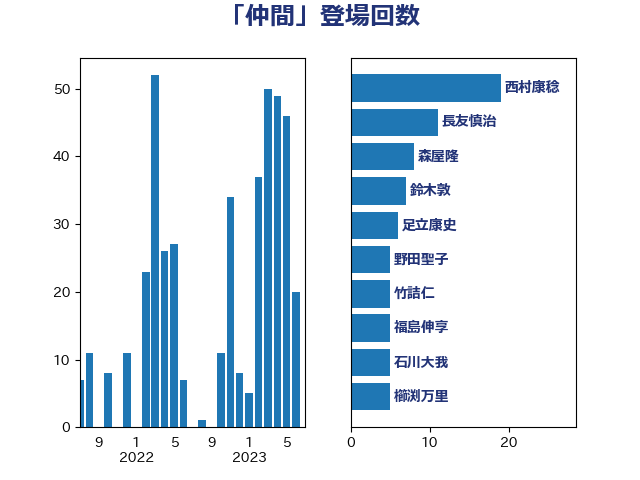

単語「仲間」

| 西村康稔 | 自由民主党 | 19 回 |
| 長友慎治 | 国民民主党 | 11 回 |
| 森屋隆 | 立憲民主党 | 8 回 |
| 鈴木敦 | 国民民主党 | 7 回 |
| 足立康史 | 日本維新の会 | 6 回 |
| 野田聖子 | 自由民主党 | 5 回 |
| 竹詰仁 | 国民民主党 | 5 回 |
| 福島伸享 | 無所属 | 5 回 |
| 石川大我 | 立憲民主党 | 5 回 |
| 櫛渕万里 | れいわ新選組 | 5 回 |
| 岸田文雄 | 自由民主党 | 5 回 |
| 太栄志 | 立憲民主党 | 5 回 |
| 野間健 | 立憲民主党 | 4 回 |
| 藤巻健太 | 日本維新の会 | 4 回 |
| 萩生田光一 | 自由民主党 | 4 回 |
| 永岡桂子 | 自由民主党 | 4 回 |
| 榛葉賀津也 | 国民民主党 | 4 回 |
| 梅村みずほ | 日本維新の会 | 4 回 |
| 山田勝彦 | 立憲民主党 | 4 回 |
| 小野寺五典 | 自由民主党 | 4 回 |
| 塩村あやか | 立憲民主党 | 4 回 |
| 堀場幸子 | 日本維新の会 | 4 回 |
| 吉良州司 | 無所属 | 4 回 |
| 青島健太 | 日本維新の会 | 3 回 |
| 福山哲郎 | 立憲民主党 | 3 回 |
| 泉健太 | 立憲民主党 | 3 回 |
| 水岡俊一 | 立憲民主党 | 3 回 |
| 梅谷守 | 立憲民主党 | 3 回 |
| 柴愼一 | 立憲民主党 | 3 回 |
| 末松信介 | 自由民主党 | 3 回 |
| 小渕優子 | 自由民主党 | 3 回 |
| 小沢雅仁 | 立憲民主党 | 3 回 |
| 寺田静 | 無所属 | 3 回 |
| 寺田学 | 立憲民主党 | 3 回 |
| 大西健介 | 立憲民主党 | 3 回 |
| 城井崇 | 立憲民主党 | 3 回 |
| 井上哲士 | 日本共産党 | 3 回 |
| 須藤元気 | 無所属 | 2 回 |
| 音喜多駿 | 日本維新の会 | 2 回 |
| 金村龍那 | 日本維新の会 | 2 回 |
| 金子道仁 | 日本維新の会 | 2 回 |
| 近藤和也 | 立憲民主党 | 2 回 |
| 越智俊之 | 自由民主党 | 2 回 |
| 赤木正幸 | 日本維新の会 | 2 回 |
| 藤岡隆雄 | 立憲民主党 | 2 回 |
| 舩後靖彦 | れいわ新選組 | 2 回 |
| 自見はなこ | 自由民主党 | 2 回 |
| 石橋林太郎 | 自由民主党 | 2 回 |
| 渡辺創 | 立憲民主党 | 2 回 |
| 浅田均 | 日本維新の会 | 2 回 |
| 池下卓 | 日本維新の会 | 2 回 |
| 江藤拓 | 自由民主党 | 2 回 |
| 永井学 | 自由民主党 | 2 回 |
| 森本真治 | 立憲民主党 | 2 回 |
| 梅村聡 | 日本維新の会 | 2 回 |
| 根本幸典 | 自由民主党 | 2 回 |
| 村田享子 | 立憲民主党 | 2 回 |
| 木村英子 | れいわ新選組 | 2 回 |
| 早坂敦 | 日本維新の会 | 2 回 |
| 平木大作 | 公明党 | 2 回 |
| 市村浩一郎 | 日本維新の会 | 2 回 |
| 山本太郎 | れいわ新選組 | 2 回 |
| 山口晋 | 自由民主党 | 2 回 |
| 小林茂樹 | 自由民主党 | 2 回 |
| 小倉將信 | 自由民主党 | 2 回 |
| 天畠大輔 | れいわ新選組 | 2 回 |
| 大石あきこ | れいわ新選組 | 2 回 |
| 古賀千景 | 立憲民主党 | 2 回 |
| 保岡宏武 | 自由民主党 | 2 回 |
| 伊藤孝恵 | 国民民主党 | 2 回 |
| 仁木博文 | 無所属 | 2 回 |
| 中谷一馬 | 立憲民主党 | 2 回 |
| 中川正春 | 立憲民主党 | 2 回 |
| 世耕弘成 | 自由民主党 | 2 回 |
| 鶴保庸介 | 自由民主党 | 1 回 |
| 高橋千鶴子 | 日本共産党 | 1 回 |
| 高橋光男 | 公明党 | 1 回 |
| 高木真理 | 立憲民主党 | 1 回 |
| 馬場雄基 | 立憲民主党 | 1 回 |
| 長浜博行 | 無所属 | 1 回 |
| 鈴木貴子 | 自由民主党 | 1 回 |
| 鈴木英敬 | 自由民主党 | 1 回 |
| 鈴木義弘 | 国民民主党 | 1 回 |
| 鈴木宗男 | 日本維新の会 | 1 回 |
| 金子恭之 | 自由民主党 | 1 回 |
| 野村哲郎 | 自由民主党 | 1 回 |
| 赤澤亮正 | 自由民主党 | 1 回 |
| 赤嶺政賢 | 日本共産党 | 1 回 |
| 谷川とむ | 自由民主党 | 1 回 |
| 藤田文武 | 日本維新の会 | 1 回 |
| 荒井優 | 立憲民主党 | 1 回 |
| 若林健太 | 自由民主党 | 1 回 |
| 芳賀道也 | 国民民主党 | 1 回 |
| 紙智子 | 日本共産党 | 1 回 |
| 米山隆一 | 立憲民主党 | 1 回 |
| 穂坂泰 | 自由民主党 | 1 回 |
| 神谷裕 | 立憲民主党 | 1 回 |
| 礒崎哲史 | 国民民主党 | 1 回 |
| 石垣のりこ | 立憲民主党 | 1 回 |
| 石井苗子 | 日本維新の会 | 1 回 |
| 田村貴昭 | 日本共産党 | 1 回 |
| 田村智子 | 日本共産党 | 1 回 |
| 田嶋要 | 立憲民主党 | 1 回 |
| 田名部匡代 | 立憲民主党 | 1 回 |
| 田中健 | 国民民主党 | 1 回 |
| 猪口邦子 | 自由民主党 | 1 回 |
| 牧義夫 | 立憲民主党 | 1 回 |
| 牧原秀樹 | 自由民主党 | 1 回 |
| 源馬謙太郎 | 立憲民主党 | 1 回 |
| 浜田靖一 | 自由民主党 | 1 回 |
| 河野太郎 | 自由民主党 | 1 回 |
| 江島潔 | 自由民主党 | 1 回 |
| 水野素子 | 立憲民主党 | 1 回 |
| 櫻田義孝 | 自由民主党 | 1 回 |
| 横沢高徳 | 立憲民主党 | 1 回 |
| 森山裕 | 自由民主党 | 1 回 |
| 柴田巧 | 日本維新の会 | 1 回 |
| 柳本顕 | 自由民主党 | 1 回 |
| 柳ヶ瀬裕文 | 日本維新の会 | 1 回 |
| 林芳正 | 自由民主党 | 1 回 |
| 松本剛明 | 自由民主党 | 1 回 |
| 松木けんこう | 立憲民主党 | 1 回 |
| 松川るい | 自由民主党 | 1 回 |
| 杉本和巳 | 日本維新の会 | 1 回 |
| 末次精一 | 立憲民主党 | 1 回 |
| 朝日健太郎 | 自由民主党 | 1 回 |
| 日下正喜 | 公明党 | 1 回 |
| 新妻秀規 | 公明党 | 1 回 |
| 斎藤アレックス | 国民民主党 | 1 回 |
| 打越さく良 | 立憲民主党 | 1 回 |
| 徳永久志 | 無所属 | 1 回 |
| 平沼正二郎 | 自由民主党 | 1 回 |
| 平林晃 | 公明党 | 1 回 |
| 工藤彰三 | 自由民主党 | 1 回 |
| 川田龍平 | 立憲民主党 | 1 回 |
| 岩谷良平 | 日本維新の会 | 1 回 |
| 岩本剛人 | 自由民主党 | 1 回 |
| 岡田直樹 | 自由民主党 | 1 回 |
| 山田宏 | 自由民主党 | 1 回 |
| 山東昭子 | 自由民主党 | 1 回 |
| 山崎正恭 | 公明党 | 1 回 |
| 小野泰輔 | 日本維新の会 | 1 回 |
| 小森卓郎 | 自由民主党 | 1 回 |
| 宮本岳志 | 日本共産党 | 1 回 |
| 宮下一郎 | 自由民主党 | 1 回 |
| 奥野総一郎 | 立憲民主党 | 1 回 |
| 大島九州男 | れいわ新選組 | 1 回 |
| 大串博志 | 立憲民主党 | 1 回 |
| 坂井学 | 自由民主党 | 1 回 |
| 嘉田由紀子 | 無所属 | 1 回 |
| 吉川沙織 | 立憲民主党 | 1 回 |
| 古川直季 | 自由民主党 | 1 回 |
| 勝部賢志 | 立憲民主党 | 1 回 |
| 務台俊介 | 自由民主党 | 1 回 |
| 伴野豊 | 立憲民主党 | 1 回 |
| 伊藤岳 | 日本共産党 | 1 回 |
| 中条きよし | 日本維新の会 | 1 回 |
| 中島克仁 | 立憲民主党 | 1 回 |
| 中山展宏 | 自由民主党 | 1 回 |
| 上田英俊 | 自由民主党 | 1 回 |
| 上月良祐 | 自由民主党 | 1 回 |
| 上川陽子 | 自由民主党 | 1 回 |